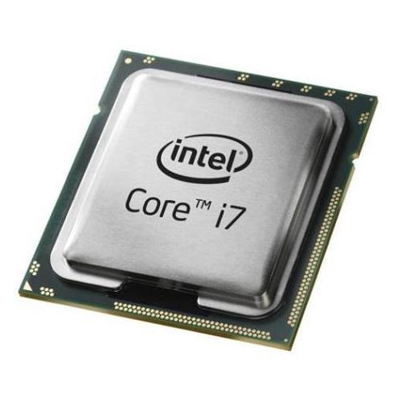

Learning Objectives
- Define Computer Hardware.
- Identify Input Devices.
- Identify Output Devices.
- Identify Storage Devices.
- Explain the function of the CPU.

What is Computer Hardware?
Computer hardware refers to all the physical components of a computer system that can be seen and touched. Hardware forms the tangible part of a computer system and works together to perform computing tasks.
Examples include:
- Keyboard
- Mouse
- Monitor
- Printer
- CPU
- Hard Disk

Input Devices
Input devices are hardware components used to enter data and instructions into a computer system.
- Keyboard
- Mouse
- Scanner
- Microphone

Output Devices
Output devices present processed information from a computer to the user.
- Monitor
- Printer
- Speakers
- Projector

Storage Devices
Storage devices are used to save data and information for future use.
- Hard Disk
- Flash Drive
- Memory Card
- CD/DVD

Central Processing Unit (CPU)
The Central Processing Unit (CPU) is known as the brain of the computer. It processes instructions, performs calculations, and controls the activities of all other components in the computer system.
Lesson Summary
Computer hardware refers to the physical parts of a computer that can be seen and touched. Hardware can be grouped into input devices, output devices, storage devices, and processing devices. The CPU serves as the brain of the computer and controls computer operations.